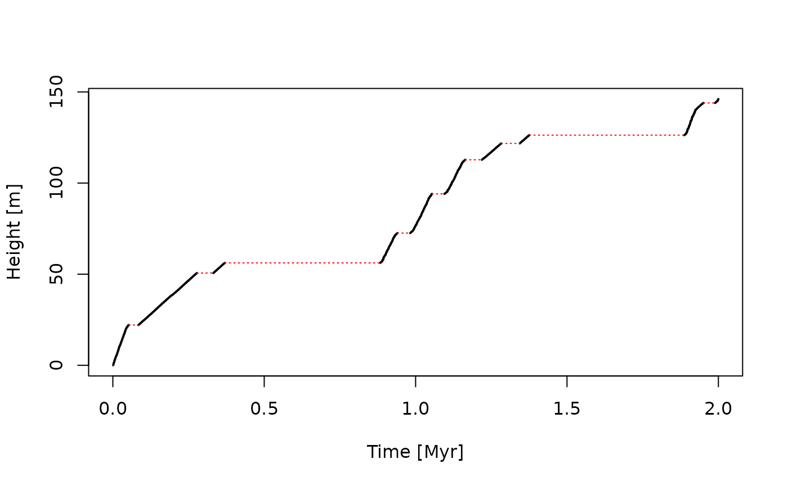
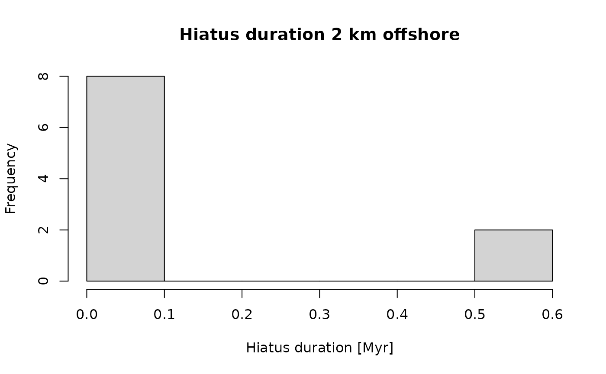

Introduction
This vignette is an introduction to the admtools package.
Installation
From CRAN
To install the package from CRAN, run
install.packages("admtools")To install the package from GitHub, first install the remotes package:
install.packages("remotes")Then run
remotes::install_github(repo = "MindTheGap-ERC/admtools",
build_vignettes = TRUE,
ref = "HEAD",
dependencies = TRUE)to install the latest stable version.
Getting help
Use
help(package = "admtools")to get an overview of the available help pages of the package, and
?admtoolsto view a simple help page for the package.
Vignettes are a long form of package documentation that provide more detailed examples. To list the available vignettes, use
browseVignettes(package = "admtools") # opens in Browser
#or
vignette(package = "admtools")The adm and multiadm classes
The admtools package defines three main classes:
adm, sac and multiadm. The class
adm represent a single age-depth model, from which
information can be extracted (e.g. completeness, number of hiatuses,
etc.) and that can be used to transform data between the stratigraphic
domain and time domain. The multiamd class is a list of
adm objects. multiadm objects are used to
represent uncertainties of age-depth models. Objects of type
sac are sediment accumulation curves that can contain
information on erosion, and can be turned into age-depth models.
Conventions
In contrast to its name, the admtools package currently deals with time and height instead of age and depth. In this sense, the age-depth models are time-height models. Both time and height can be negative values. To handle ages, use time before the present. To handle depths, use height below a point of reference (e.g., the sediment surface).
Example
This example explains the construction and application of
adm objects. As example data we use outputs from CarboCAT
Lite, a model of carbonate platform growth (Burgess 2013, 2023). This data is automatically
loaded in the background by the package. To get some info of the data
use
?CarboCATLite_dataThis data is identical to scenario A from Hohmann et al. (2024) as published in Hohmann et al. (2023). See therein for details on the simulation, reproducibility, and a chronostratigraphic chart and a figure showing a transect through the carbonate platform.
Defining age-depth models
The standard constructor for age-depth models is
tp_to_adm (“tie point to age-depth model”). It returns an
objecto of class adm. This object combines information of
stratigraphic heights and times and erosive interval. It allows to
transform data between the stratigraphic and the time domain, and
identify which data is destroyed due to hiatuses.
As example, I use the timing and stratigraphic positions of tie points taken from CarboCAT Lite to construct an age-depth model, and use the option to directly associate length and time units with it.
# see ?tp_to_adm for detailed documentation
my_adm = tp_to_adm(t = CarboCATLite_data$time_myr,
h = CarboCATLite_data$height_2_km_offshore_m,
L_unit = "m",
T_unit = "Myr")This age-depth model represents the relationship between elapsed model time and accumulated sediment 2 km offshore in a synthetic carbonate platform.
Representation
Typing the name my_adm in the console will only tell
that the generated variable is an age-depth model
my_adm
#> age-depth modelTo get a quick overview of the properties of my_adm, use
summary:
summary(my_adm)
#> age-depth model
#> Total duration: 2 Myr
#> Total thickness: 146.0621 m
#> Stratigraphic completeness: 32.65 %
#> 10 hiatus(es)If you want to inspect the insides of the object, use
str:
str(my_adm)
#> List of 5
#> $ t : num [1:2001] 0 0.001 0.002 0.003 0.004 0.005 0.006 0.007 0.008 0.009 ...
#> $ h : num [1:2001] 0 0 0.609 1.095 1.722 ...
#> $ destr : logi [1:2000] TRUE FALSE FALSE FALSE FALSE FALSE ...
#> $ T_unit: chr "Myr"
#> $ L_unit: chr "m"
#> - attr(*, "class")= chr "adm"You can manually manipulate the fields of the adm object
by treating it like a list. I do not recommend doing so, as it might
result in unexpected downstream behavior. If you want to extract tie
points use get_L_tp and get_T_tp.
You can plot adm objects via the standard
plot function. Here, I use the option to highlight hiatuses
in red, and increase the linw width of the conservative ( =
non-destructive) intervals.
# see ?plot.adm for plotting options for adm objects
plot(my_adm,
col_destr = "red",
lwd_acc = 2)
T_axis_lab() # plot time axis label, see ?T_axis_lab for details
L_axis_lab() # plot height axis label, see ?L_axis_lab for details
You can also plot sedimentation rates in the time domain using
plot_sed_rate_t“:
plot_sed_rate_t(my_adm)For more information on the extraction of sedimentation rates in the
time domain see the functions sed_rate_t and
sed_rate_t_fun. Sedimentation rates in the length domain
can be extracted using sed_rate_l and
sed_rate_l_fun and plotted via
plot_sed_rate_l. In addition, condensation (time preserved
per stratigraphic increment) can be examined using the functions
condensation, condensation_fun and
plot_condensation.
Extracting data from age-depth models
Use the functions get_total_duration,
get_total_thickness, get_completeness, and
get_hiat_no to extract information:
get_total_duration(my_adm) #total time covered by the age-depth model
#> [1] 2
get_total_thickness(my_adm) # total thickness of section represented by the adm
#> [1] 146.0621
get_completeness(my_adm) # stratigraphic completeness as proportion
#> [1] 0.3265
get_incompleteness(my_adm) # stratigraphic incompleteness (= 1- strat. incompleteness)
#> [1] 0.6735
get_hiat_no(my_adm) # number of hiatuses
#> [1] 10For more detailed information, you can use
-
get_hiat_durationto get a vector of hiatus durations -
get_hiat_listto get a list of hiatus positions and duration.
For example, to plot a histogram of hiatus durations, use
hist(x = get_hiat_duration(my_adm),
freq = TRUE,
xlab = "Hiatus duration [Myr]",
main = "Hiatus duration 2 km offshore")
The function is_destructive can be used to examine
whether points in time coincide with hiatuses:
is_destructive(my_adm,
t = c(0.1,0.5))
#> [1] FALSE TRUETransforming data between time and stratigraphic domain
Heights and times
The functions get_height and get_time are
the workhorses to transform data using age-depth models.
-
get_timetakes andadmobject and vector of heightsh(stratigraphic positions), and returns a vector of times -
get_heighttakes anadmobject and vector of timestand returns a vector of associated stratigraphic positions
As example, say we want to know the time of deposition of the following stratigraphic positions:
Conversely, to determine what parts of the section are deposited as a specific time, use
t = c(0.2,1.4)
get_height(my_adm,
t = t)
#> [1] 39.13951 NAHere, the NA indicates that the time 1.4 coincides with
erosion. If you want to know the stratigraphic position of the hiatus
that coincides with that time, use the option
destructive = FALSE:
t = c(0.2,1.4)
get_height(my_adm,
t = t,
destructive = FALSE)
#> [1] 39.13951 126.27764Alternatively, you can also use the wrappers
strat_to_time and time_to_strat for the
transformation. For expanded modeling features please use the
StratPal package (Github | Webpage | CRAN). It
provides more biological context and utility functions to build modeling
pipelines that include ecological, taphonomic, stratigraphic, and
evolutionary effects.
Phylogenetic trees
The admtools package can transform complex objects
between the time and stratigraphic domain. This is done using the
functions strat_to_time and time_to_strat.
As an example, we transform a chronogram (a phylogenetic tree where
branch length represents time). An example tree following the
birth-death model is stored with the package as the variable
timetree. See ?timetree for details on how
this tree was generated.
#install.packages("ape") Package for analyses of phylogenetics and evolution
# see ?ape::rlineage for help
#set.seed(1)
ape::plot.phylo(timetree) # see also ?ape::plot.phylo
axis(1)
mtext("Time [Myr]", side = 1, line = 2.5)You can transform the tree using time_to_strat:
tree_in_strat_domain = time_to_strat(obj = timetree,
x = my_adm)Plotting the resulting tree along the stratigraphic column shows how the evolutionary relationships would be preserved 2 km offshore in the simulated carbonate platform:
ape::plot.phylo(tree_in_strat_domain, direction = "upwards")
axis(side = 2)
mtext("Stratigraphic Height [m]",
side = 2,
line = 2)Lists and time/stratigraphic series
admtools can transform lists from the time to the height
domain and vice versa given they have elements with names h
or t. These lists can be interpreted as time/stratigraphic
series, where times and stratigraphic positions are associated with
measured values. Note that these are not ts objects as used
by the stats package, as they will be generally
heterodistant due to the irregular nature of the age-depth
transformation.
As example, we simulate trait evolution over 2 Myr using a Brownian motion, and transform the simulation into the stratigraphic domain.
t = seq(0, 2, by = 0.001) # times
BM = function(t){
#" Simulate Brownian motion at times t
li = list("t" = t,
"y" = cumsum(c(0, rnorm(n = length(t) - 1, mean = 0, sd = sqrt(diff(t))))))
class(li) = c("timelist", "list") # assign class `timelist` for easy plotting, see ?plot.timelist
return(li)
}
evo_list = BM(t)
plot(x = evo_list,
xlab = "Time [Myr]",
ylab = "Trait Value",
type = "l")
strat_list = time_to_strat(obj = evo_list,
x = my_adm)
plot(x = strat_list,
orientation = "lr",
type = "l",
xlab = "Stratigraphic Height [m]",
ylab = "Trait Value",
main = "Trait Evolution 2 km Offshore")Note the jump in traits generated by the erosional interval in
my_adm. Both time_to_strat and
strat_to_time return stratlist and
timelist objects when applied to lists. These are like
ordinary lists, but come with simplified plotting optionality, see
?plot.stratlist and ?plot.timelist for
details.
For expanded modeling features with biological context, please use
the StratPal package (Github | Webpage | CRAN). It
provides light wrappers around admtools and out of the box
modeling of trait evolution.
Further information
For an overview of the structure of the admtools package
and the classes used therein see
vignette("admtools_doc")For details on plotting ADMs see
For information on estimating age-depth models from sedimentation rates, see
vignette("adm_from_sedrate")For information on estimating age-depth models from tracer contents of rocks and sediments, see
vignette("adm_from_trace_cont")For information on depth-depth curves and correlation see
vignette("correlation")References
Burgess, Peter. “CarboCAT: A cellular automata model of heterogeneous carbonate strata.” Computers & geosciences 53 (2013): 129-140. DOI: 10.1016/j.cageo.2011.08.026
Burgess, Peter. “CarboCAT Lite v1.0.1”. Zenodo 2023. DOI: 10.5281/zenodo.8402578
Hohmann, Niklas; Koelewijn, Joël R.; Burgess, Peter; Jarochowska, Emilia. 2024. “Identification of the mode of evolution in incomplete carbonate successions.” BMC Ecology and Evolution 24, 113. https://doi.org/10.1186/s12862-024-02287-2.
Hohmann, Niklas, Koelewijn, Joël R.; Burgess, Peter; Jarochowska, Emilia. 2023. “Identification of the Mode of Evolution in Incomplete Carbonate Successions - Supporting Data.” Open Science Framework. https://doi.org/10.17605/OSF.IO/ZBPWA, published under the CC-BY 4.0 license.